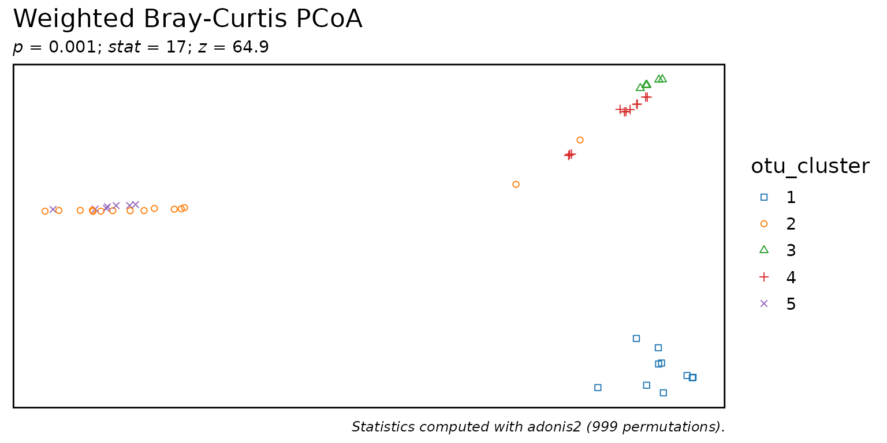

Define sample kmeans clusters from taxa abundances.
Arguments
- biom
An rbiom object, such as from
as_rbiom(). Any value accepted byas_rbiom()can also be given here.- rank
Which taxa rank to use. E.g.
"Phylum","Genus",".otu", etc. An integer can also be given, where1is the highest rank,2is the second highest,-1is the lowest rank,-2is the second lowest, and0is the OTU "rank". Runbiom$ranksto see all options for a given rbiom object. Default:.otu.- k
Number of clusters. Default:
5L- ...
Passed on to
stats::kmeans().
See also
Other taxa_abundance:
sample_sums(),
taxa_boxplot(),
taxa_corrplot(),
taxa_heatmap(),
taxa_stacked(),
taxa_stats(),
taxa_sums(),
taxa_table()
Other clustering:
bdiv_clusters()
Examples
library(rbiom)
biom <- rarefy(hmp50)
biom$metadata$otu_cluster <- taxa_clusters(biom)
pull(biom, 'otu_cluster')[1:10]
#> HMP01 HMP02 HMP03 HMP04 HMP05 HMP06 HMP07 HMP08 HMP09 HMP10
#> 1 1 3 3 1 3 1 3 3 4
#> Levels: 1 2 3 4 5
bdiv_ord_plot(biom, layers = "p", stat.by = "otu_cluster")
